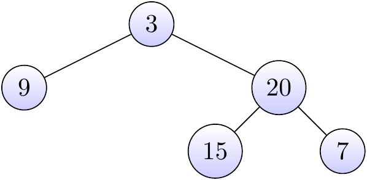

4.29 Construct Binary Tree from Preorder and Inorder Traversal / Leet Code 105 / Medium
4.29.1 Description
Given preorder and inorder traversal of a tree, construct the binary tree. You may assume that duplicates do not exist in the tree.
4.29.2 Example
preorder = [3,9,20,15,7] inorder = [9,3,15,20,7]
Return the following binary tree:

Figure 4.36: Some caption.
4.29.3 Solution
4.29.3.1 Walkthrough
PreOrder array is used to construct data value of a node, whereas InOrder array is used to acknowledge the left and right boundary of a node. We could use a Map to store the InOrder array associated with its index (position in array) value and biuld tree according to the following conditions:
- if startIdx \(>\) endIdx Return null. (Terminal)
- if startIdx \(==\) endIdx The node is here. (Terminal)
- if startIdx \(>\) endIdx There should be more nodes in this branch.
4.29.3.2 Analysis
Time complexity is O(n) as every node is visited once.
4.29.3.3 Algorithm
dfs 1.2.1
4.29.3.4 Java Code - PreOrder Recursive
int preorderIndex = 0;
public TreeNode buildTree(int[] preorder, int[] inorder) {
if (preorder.length == 0) {
return null;
}
Map<Integer, Integer> inorderIndex = new HashMap<>();
for (int i = 0; i < inorder.length; i++) {
inorderIndex.put(inorder[i], i);
}
return buildTree(preorder, inorderIndex, 0, inorder.length - 1);
}
private TreeNode buildTree(int[] preorder, Map<Integer, Integer> inorderIndex, int startIdx, int endIdx) {
if (startIdx > endIdx) {
return null;
}
int val = preorder[preorderIndex++];
TreeNode node = new TreeNode(val);
if (startIdx == endIdx) {
return node;
}
int inIndex = inorderIndex.get(val);
node.left = buildTree(preorder, inorderIndex, startIdx, inIndex - 1);
node.right = buildTree(preorder, inorderIndex, inIndex + 1, endIdx);
return node;
}